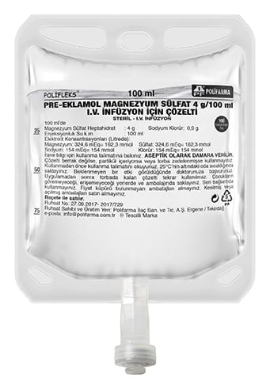

Pre-Eklamol Magnezyum Sülfat 4 g/100 ml I.V. İnfüzyon İçin Çözelti , 100 ml

Ne için kullanılır
KT · Bölüm 1• PRE-EKLAMOL, her 100 mL çözeltide 4.0 g magnezyum sülfat heptahidrat içeren koruyucu şeffaf LHDPE torba içerisinde SFC portlu 100 ml’lik PP (Polipropilen) torba (Setsiz formda) şeklinde piyasaya sunulmaktadır.
Torbalar renksiz ve berrak çözelti içermektedir. Mineral destekleri adlı ilaç grubunda yer alan magnezyum sülfat aşağıdaki durumlarda kullanılır: • Gebelikte kan basıncının yükselmesi, ayaklarda ve vücutta fazla su toplanması gibi belirtileri olan pre-eklampsinin ileri bir aşaması olan eklampsinin (bilinç kaybı, kasılmalar ile başlayıp koma ile sonuçlanabilen gebelik zehirlenmesi) tedavisi ve önlenmesi.